Chunk: menšia časť textu pre ľahšie vyhľadávanie relevantných dát
Query/User Prompt: otázka, ktorú zadáva používateľ modelu
System Prompt: upravuje správanie modelu
Embedding: numerická reprezentácia chunku na porovnávanie sémantickej podobnosti
Token: základná jednotka textu spracovaná modelom
LLM Context Window: maximálny počet tokenov, ktoré vie model držať v svojej pamäti
Čo je RAG?
Retrieval Augmented Generation (RAG) je technológia, ktorá kombinuje vyhľadávanie relevantných informácií s generatívnymi schopnosťami jazykových modelov. Pri retrievale získava najvhodnejšie informácie z externých zdrojov mimo modelu, ktoré sú následne použité jazykovým modelom (LLM) pre generovanie odpovedí na základe dodaného kontextu a otázky používateľa.
Spracovanie dát
pred implementáciou RAG systému potrebujeme pripraviť dáta.
knižnice na spracovanie dát:
Unstructured/PyMuPDF: na extrakciu textu a obrázkov
Camelot: pre extrakciu údajov z tabuliek
Rozdelenie na chunky, napr:
podľa regexu
sémanticky pomocou LangChain
ukladanie vektorov chunkov do databázy pre efektívne vyhľadávanie, napr.:
PGVector
Chroma
Pinecone
Jednoduchý workflow RAG
Code snippet jednoduchého workflowu
elements = partition_pdf("example.pdf")
# Extract text contentdoc_content = ' '.join(element.page_contentforelementinelementsifelement.page_content)
# Semantic chunking and embeddingtext_splitter = SemanticChunker(OpenAIEmbeddings())
chunks = text_splitter.split_text(doc_content)
embeddings = text_splitter.embeddings.embed_documents(chunks)
# Insert chunks and embeddings into `pgvector` table# Retrieve 5 similar chunks by cosine similaritydefretrieve_similar_chunks(query_embedding, top_k=5):
cursor.execute(
"""
SELECT chunk
FROM embeddings_table
ORDER BY embedding <=> %s
LIMIT %s
""",
(query_embedding, top_k)
)
return [row[0] forrowincursor.fetchall()]
# Example embedding of query for retrievaluser_prompt = "What is RAG?"query_embedding = text_splitter.embeddings.embed_query([user_prompt])
retrieved_chunks = retrieve_similar_chunks(query_embedding)
# Define system prompt and LLMprompt = ChatPromptTemplate.from_messages(
[
("system", "You are a helpful POC assistant that helps summarize
retrieved content relevant to the user prompt."),
("human", "{retrieved_chunks}"),
("human", "{user_prompt}")
]
)
llm = OpenAI()
# Chain prompt and LLM invocationchain = prompt | llmresponse = chain.invoke(
{
"retrieved_chunks": '\n'.join(retrieved_chunks),
"user_prompt": user_prompt
}
)
Komplexnejší workflow RAG
Query Transformation: LLM rozkladá zložitý dotaz na sub-queries
Query Routing: nasmerovanie dotazu k relevantnému zdroju
Hybrid Retrieval: spojenie semantického vyhľadávania s kľúčovými slovami
Chunk Re-ranking: najrelevantnejšie chunky sú prioritizované
Summary Index: rýchle vyhľadávanie v sumároch dokumentov

Nastavenie system promptu
Vymedzenie dát pre odpovede: model odpovedá iba na základe poskytnutých kontextových údajov, s rozlíšením medzi poskytnutými chunkmi a jeho vlastnými poznatkami
Špecifikácia vstupu a výstupu: presné definovanie, ako model spracuje dotaz, vrátane štruktúry user query a relevantných chunkov, aby nedošlo k nesprávnemu vyloženiu query
Štandardizovaný výstup: ak pracujete so štruktúrovanými výstupmi (napr. JSON schema), je dôležité presne nastaviť formát očakávaného výstupu pre konzistentné výsledky
Use cases a limitácie
Praktické použitia: ideálne pre prostredia, kde sa často vyhľadávajú informácie v dokumentoch – efektívne pri statických dátach, kde môžu byť vopred pripravené prompty
Obmedzenia úložiska: veľkosť jedného 1536 dimenzionalneho vektoru je približne 6 KB, čo zvyšuje náročnosť na úložisko
Výber embedding modelu: správny embedding model je kľúčový, keďže modely sa špecializujú na rôzne prípady použitia
Prompt engineering: efektivitu môže znížiť nedostatočná znalosť používateľa v správnom formulovaní dotazov, čo si vyžaduje nejaké školenie v oblasti prompt engineeringu